Java - Exceptions
An exception is a problem that arises during the execution of a program. we have three categories of Exceptions.
- Checked exceptions/ compile time exceptions: A checked exception is an exception that occurs at the compile time, these are also called as compile time exceptions. These exceptions cannot simply be ignored at the time of compilation, the Programmer should take care of (handle) these exceptions.
- Unchecked exceptions/ Runtime Exceptions: An Unchecked exception is an exception that occurs at the time of execution, these are also called as Runtime Exceptions, these include programming bugs, such as logic errors or improper use of an API. runtime exceptions are ignored at the time of compilation.
- Errors: These are not exceptions at all, but problems that arise beyond the control of the user or the programmer. Errors are typically ignored in your code because you can rarely do anything about an error.
What is the difference between checked and unchecked Exceptions
- There are some Exceptions which are checked by compiler for smoth execution of the program, so
so Exceptions which are checked by compiler that is called checked Exeception.
Example : - File not found Exception is a good example of Checked Exception.
checked Exeception is also called default Exception. whether programmer handling or not compiler is always going to check
- Exception which are not checked by compiler that is called un checked Exeception.
Example : - Arthmatic Exception is a good example of un checked Exception.
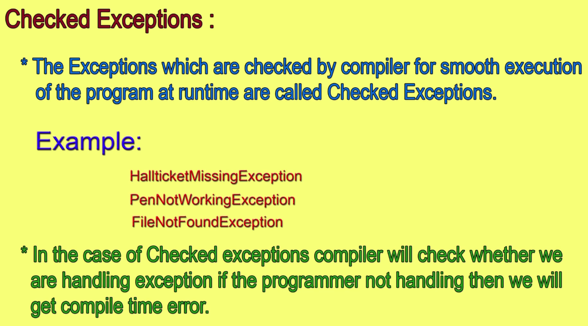
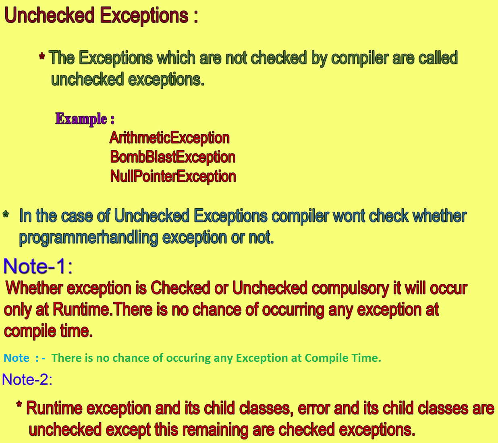
Throwable Class is the root class is the root of Exceptions.
Throwable containt two child classes.
- Exception
In the Exception , There are serveral child classes.
(Unchecked) Runtime Exception
In this Runtime Exception , There are serveral child classes.
- Arithmetic Exception
- ArrayIndexOutOfBounds Exception
- ArrayStore Exception
- ClassCast Exception
- IllegalArgument Exception
- IllegalMonitorState Exception
- IllegalState Exception
- IllegalThreadState Exception
- IndexOutOfBounds Exception
- NegativeArraySize Exception
- NullPointer Exception
- NumberFormat Exception
- Security Exception
- StringIndex OutOfBounds
Checked Exception (Compile time)
IO ExceptionIn this IO Exception , There are serveral child classes.
- File not found Exception
- EOF Exception
Error
In this Error , There are serveral child classes.
Errors are (Unchecked)
- VM Error (Virtual Machine) Error
- Out of Memory Error
- Stack Overflow Error
- Linkage Error
- Verify Error
What is the difference between NoclassDefoundError & ClassNotFound Exception
NoclassDefoundError Exception
For Hard-coded class names at the runtime, if the corresponding class file will not there then
the NoclassDefoundError Exception will be raised.
Example : - NoclassDefFoundError Exception
TestClass test=new TestClass();
if (TestClass) will not be available then Run time "NoclassDefFoundError" Exception will be raised.
ClassNotFound Exception
When you provide the class name dynamically at runtime and that time the corresponding class file will not there then
the ClassNotFound Exception will be raised.
Example : - ClassNotFound Exception
Object obj= Class.forname("TestClass").newInstance();
Here , we are providing "TestClass" dynamically at runtime , but "TestClass" will not be there then we will get
Runtime ClassNotFound Exception.
What is difference between Exception & Error
Exception
- Throwable is the class
- Throwable acts as root for java exception hierarchy.
- Throwable class contains two child classes
- Exception
- Error
- Most of time , Exception caused by program only.
- Exceptions are Re-coverable.
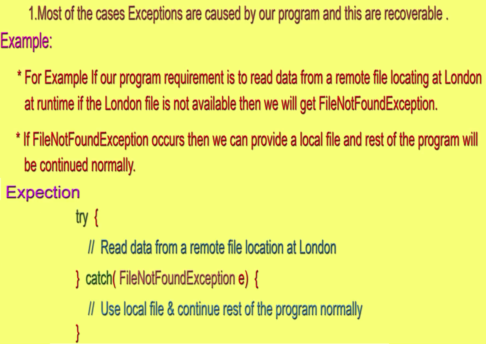
Error
- Most of the time, Errors are not caused by program. These are due to lack of System Resources.
Errors are non Re-coverable.
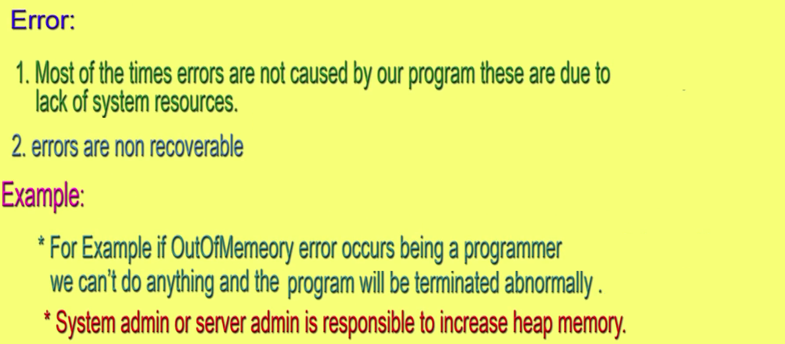
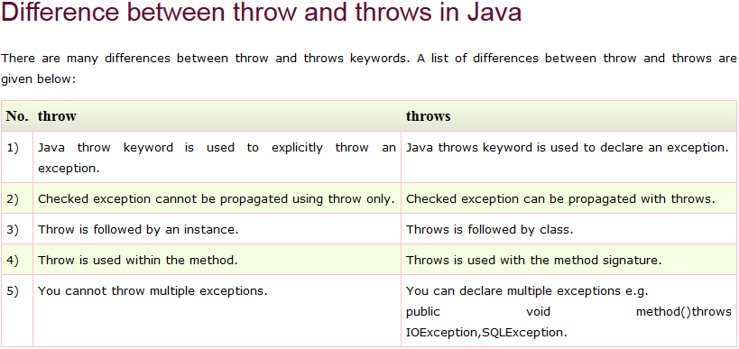
What is difference between final, finally & Finalize
Final
- Final is a Modifier and it is applicable for (classes, methods, variables)
- If we declare variable as final , then it will become constant. we can't perform re-assignment(update/change) for the variable.
- If we declare method as final in super class then we override that method in child class
- If we declare class as final, then we can't extend that class.
- 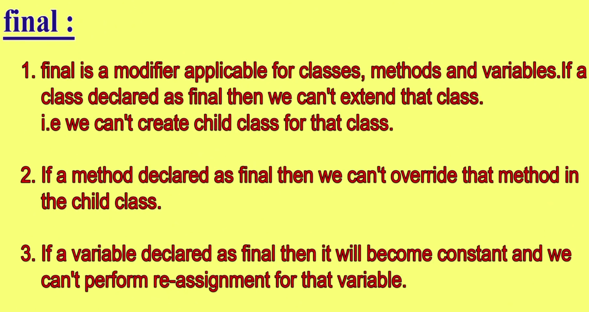
Finally
- Finally is a block and it is always associated with try catch Block.
- To maintain clean up code, we use Finally block
- 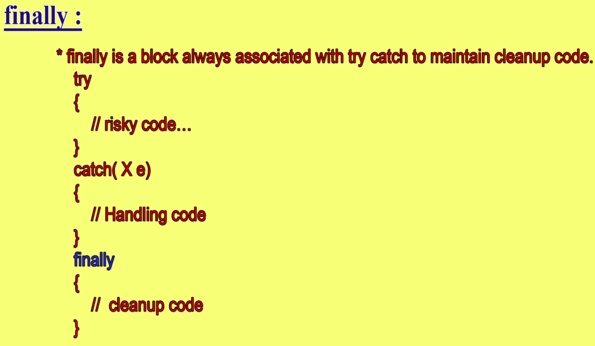
Finalize
- Finalize is a method Finalize() and it is present in Object Class. Finalize Terminolgy applicable for Garbage collections, and Finalize method always invoked by Garbage collector
- 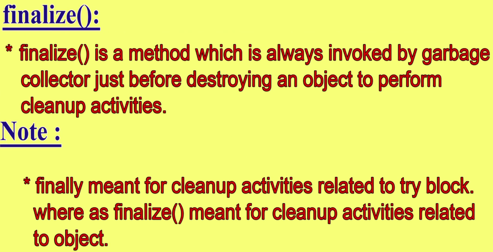
Exception Hierarchy:
All exception classes are subtypes of the
java.lang.Exception class.
The exception class is a subclass of the
Throwable class.
Other than the exception class there is another subclass called
Error which is derived from the
Throwable class.
Errors are abnormal conditions that happen in case of severe failures, these are not handled by the java programs.
Errors are generated to indicate errors generated by the
runtime environment.
The Exception class has two main subclasses:
IOException class and RuntimeException Class.
Java Unchecked RuntimeException.
| Exception |
Description |
| ArithmeticException |
Arithmetic error, such as divide-by-zero. |
| ArrayIndexOutOfBoundsException |
Array index is out-of-bounds. |
| ArrayStoreException |
Assignment to an array element of an incompatible type. |
| ClassCastException |
Invalid cast. |
| IllegalArgumentException |
Illegal argument used to invoke a method. |
| IllegalMonitorStateException |
Illegal monitor operation, such as waiting on an unlocked thread. |
| IllegalStateException |
Environment or application is in incorrect state. |
| IllegalThreadStateException |
Requested operation not compatible with current thread state. |
| IndexOutOfBoundsException |
Some type of index is out-of-bounds. |
| NegativeArraySizeException |
Array created with a negative size. |
| NullPointerException |
Invalid use of a null reference. |
| NumberFormatException |
Invalid conversion of a string to a numeric format. |
| SecurityException |
Attempt to violate security. |
| StringIndexOutOfBounds |
Attempt to index outside the bounds of a string. |
Java Checked RuntimeException.
| Exception |
Description |
| ClassNotFoundException |
Class not found. |
| CloneNotSupportedException |
Attempt to clone an object that does not implement the Cloneable interface. |
| IllegalAccessException |
Access to a class is denied. |
| InstantiationException |
Attempt to create an object of an abstract class or interface. |
| InterruptedException |
One thread has been interrupted by another thread. |
| NoSuchFieldException |
A requested field does not exist. |
| NoSuchMethodException |
A requested method does not exist. |
Catching Exceptions:
A method catches an exception using a combination of the try and catch keywords.
The throws/throw Keywords:
If a method does not handle a checked exception, the method must declare it using the throws keyword. The throws keyword appears at the end of a method's signature.
You can throw an exception, either a newly instantiated one or an exception that you just caught, by using the throw keyword.
The finally block
The finally block follows a try block or a catch block. A finally block of code always executes, irrespective of occurrence of an Exception.
Using a finally block allows you to run any cleanup-type statements that you want to execute, no matter what happens in the protected code.
Common Exceptions:
In Java, it is possible to define two catergories of Exceptions and Errors.
- JVM Exceptions: - These are exceptions/errors that are exclusively or logically thrown by the JVM.
Examples : NullPointerException, ArrayIndexOutOfBoundsException, ClassCastException,
- Programmatic exceptions: - These exceptions are thrown explicitly by the application or the API programmers
Examples: IllegalArgumentException, IllegalStateException.
- An exception is an event, which occurs during the execution of a program, that interrupts the normal flow of the program. It is an error thrown by a class or method reporting an error in code.
- The 'Throwable' class is the superclass of all errors and exceptions in the Java language
- Exceptions are broadly classified as 'checked exceptions' and 'unchecked exceptions'. All RuntimeExceptions and Errors are unchecked exceptions. Rest of the exceptions are called checked exceptions. Checked exceptions should be handled in the code to avoid compile time errors.
- Exceptions can be handled by using 'try-catch' block. Try block contains the code which is under observation for exceptions. The catch block contains the remedy for the exception. If any exception occurs in the try block then the control jumps to catch block.
- If a method doesn't handle the exception, then it is mandatory to specify the exception type in the method signature using 'throws' clause.
- We can explicitly throw an exception using 'throw' clause.
Control flow in try catch
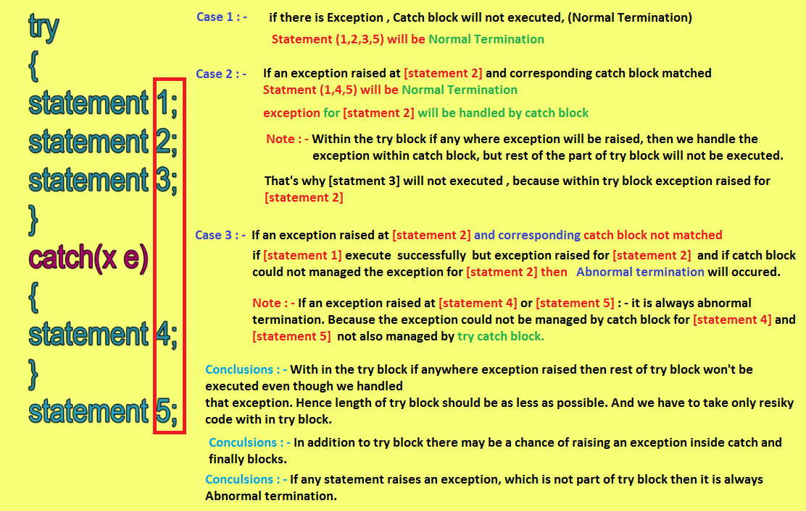
Control flow in try catch, finally
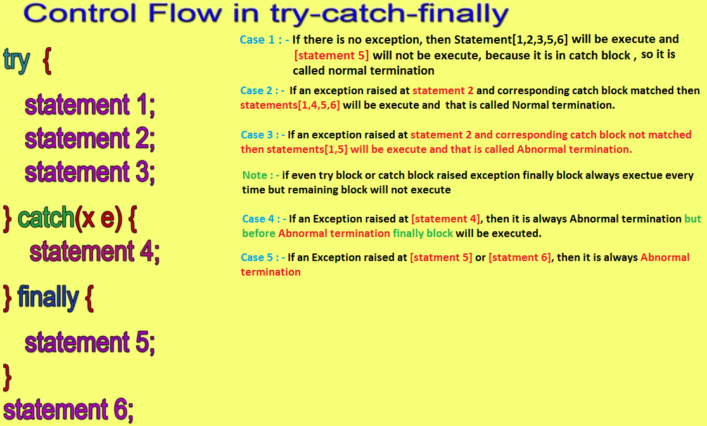
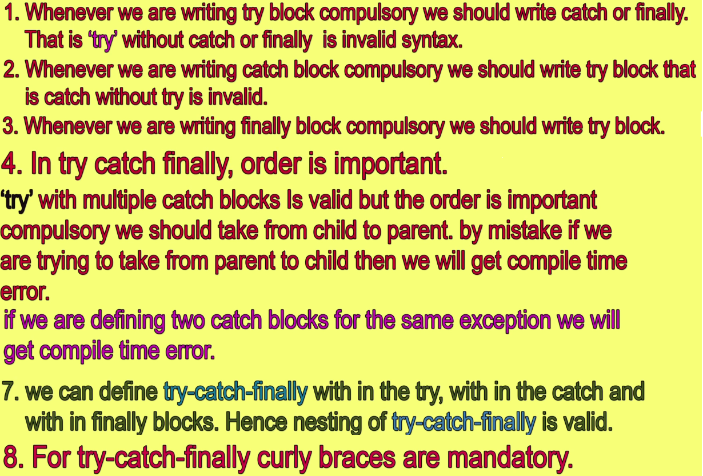
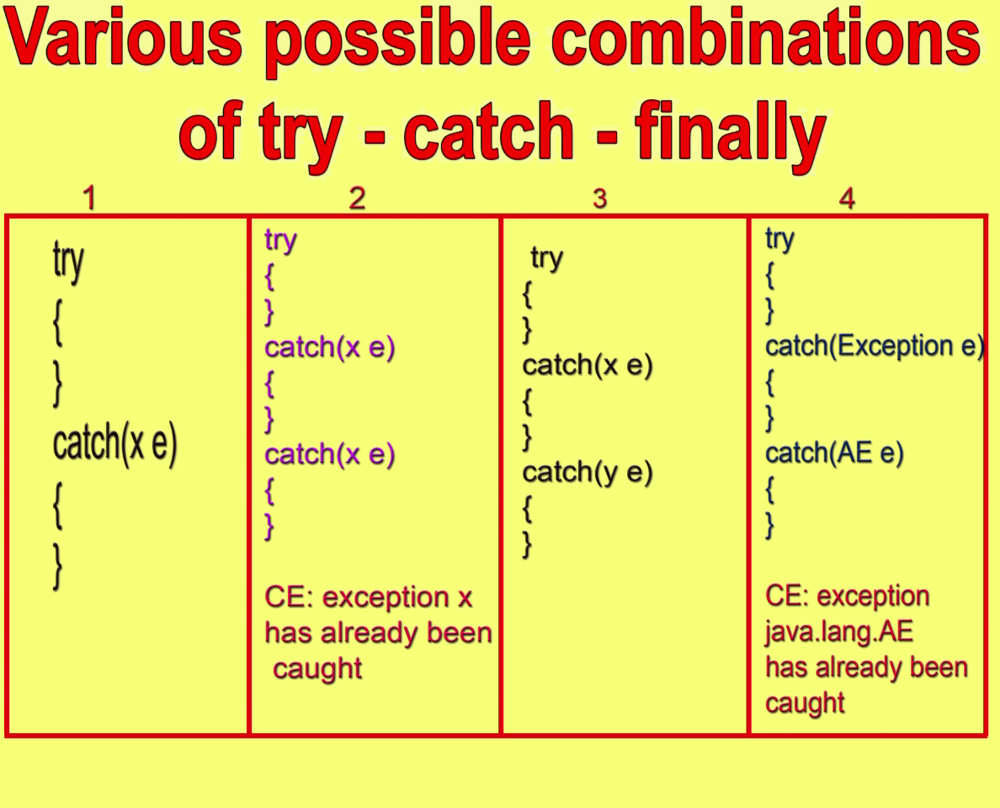
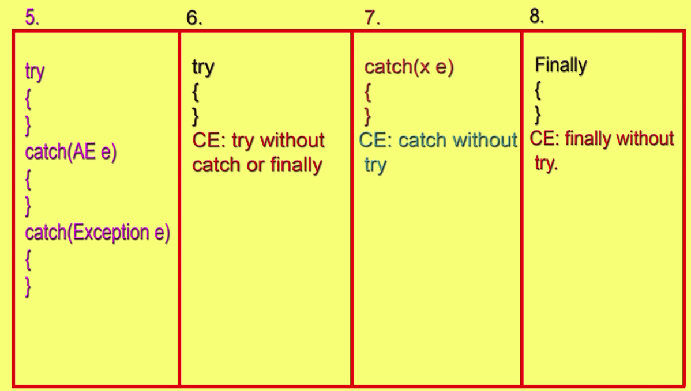
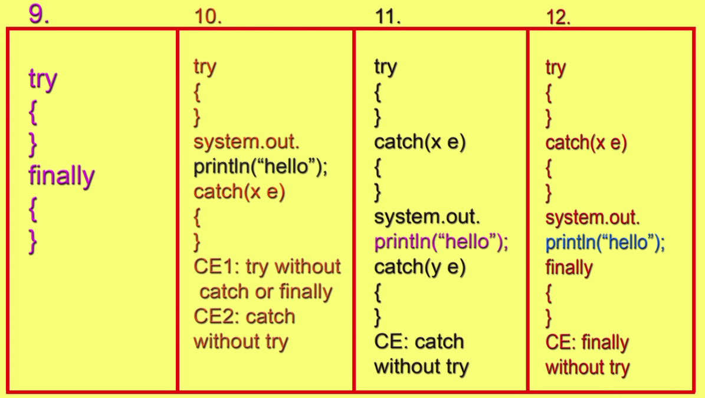
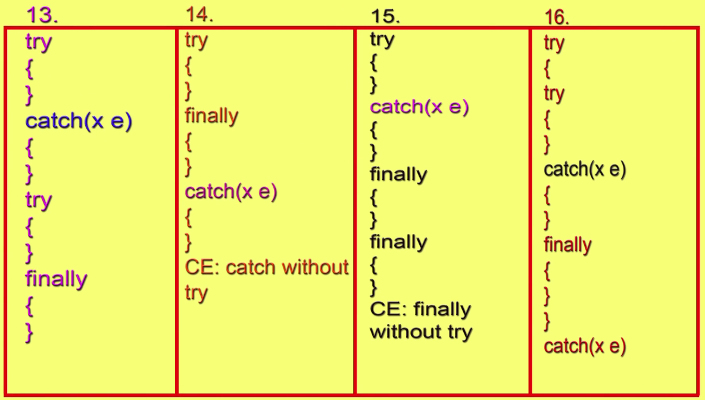
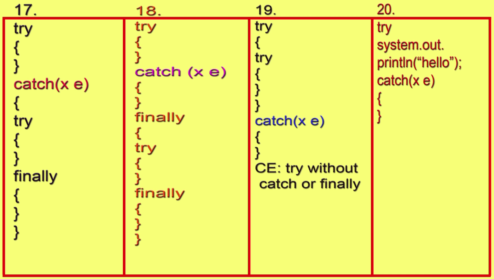
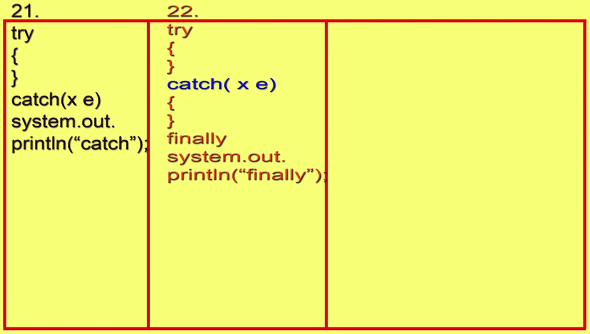